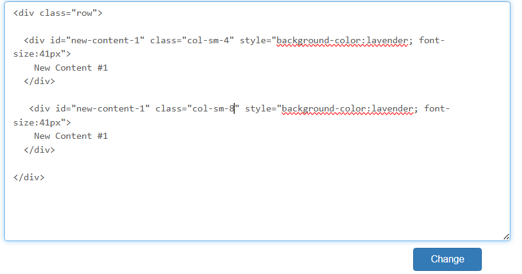
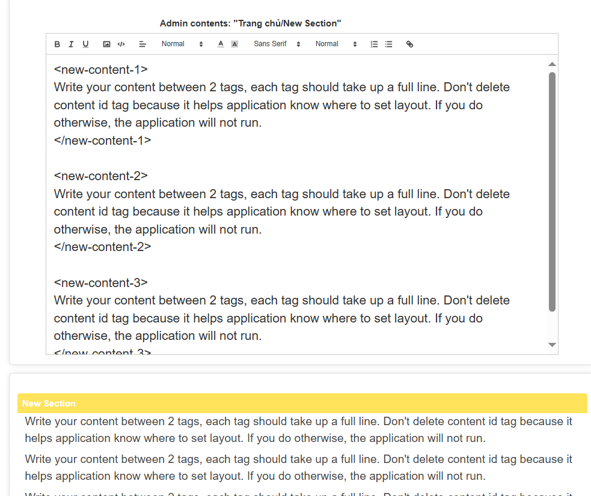

Làm thế nào để chỉnh sửa layout và thêm thông tin vào một section?
Trang web sử dụng Bootstrap Grid System để tạo layout. Mình xin mô tả một cách ngắn gọn cách nó hoạt động
- Khi bạn bấm vào Content Layout View của một Section, trang chỉnh sửa Layout được hiện ra cùng với một khung hình 12x12 để mô tả layout trực quan sẽ trông như thế nào
- Theo như cách thiết kế của Bootstrap Grid System, một cửa sổ được chia làm 12 theo chiều ngang, điều này có nghĩa khi bạn muốn sắp xếp các layer trên một dòng thì tổng chiều dài của các element phải bằng hoặc bé hơn 12, nếu lớn hơn thì sẽ gặp lỗi khi áp dụng Responsive
- Chiều dài ở đây được tính theo đơn vị riêng của Bootstrap tương ứng với các class tương ứng với các độ dài. Vd: Nếu muốn tạo 2 element trên một dòng thì có thể gán mỗi element đó class="col-sm-6" tương ứng với chiều dài bằng 6 đơn vị, hoặc gán một element là class="col-sm-4", cái còn lại là class="col-sm-8", thì sẽ có hai element lần lượt tương ứng chiều dài 4 và 8 đơn vị

- Để khai báo một dòng dùng class="row", có thể dùng khai báo này bên trong element thành phần của một "row" khác, điều này tiện lợi cho responsive
- Lưu ý, nên đặt tên id cho mỗi element là duy nhất và dễ nhớ, điều này rất quan trọng, vì nó dùng để xác định element khi thêm nội dung hoàn chỉnh ở bước sau
- Xem thêm tại: https://www.w3schools.com/bootstrap/bootstrap_grid_system.asp
Để thêm nội dung cho các element trong layout vừa tạo
- Dùng id kèm với tag mở và tag đóng giống như quy tắc html để xác định element. Bạn chỉ cần điền nội dung vào giữa hai tag, để thêm style, hoặc thêm ảnh, có thể chọn trên thanh tùy chọn của QuillJS
- Lưu ý để hai tag mở và tag đóng ở riêng một dòng, tức không có bất cứ gì khác trên hai dòng để hai tag đó, nếu không chương trình sẽ hoạt động lỗi
- Lưu ý: Không nên dùng cái này để chỉnh sửa các mục có sử dụng table vì quillJS không hỗ trợ table, nếu gắng dùng sẽ sinh lỗi!!!
